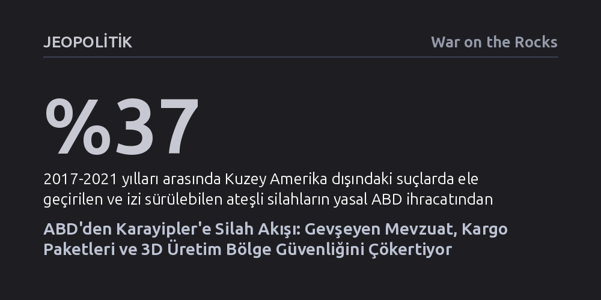

JEOPOLITIK · War on the Rocks · 2026-09-07
Karayipler'deki suç şebekeleri, ABD'nin gevşeyen silah mevzuatı, ticari kargo ağları ve yerinde 3D üretim sayesinde polisten daha üstün ateş gücüne ulaşıyor. Parçalara ayrılarak postalanan ve yerel atölyelerde monte edilen bu silah akışı, klasik sınır kontrollerini işlevsiz bırakıyor.
Karayipler'deki güvenlik krizinin temelinde yerel uyuşturucu trafiğinin değil; ABD'nin gevşeyen mevzuatı, ticari kargolar ve 3D teknolojisiyle güneye taşınan denetimsiz cephane akışının yattığını gösterir.

Karayipler denince güvenlik bürokrasisinin aklına onlarca yıldır güneyden ABD'ye uzanan kokain ve uyuşturucu rotaları gelirdi. Ancak bugün ada devletlerinin en büyük kamu güvenliği tehdidi olarak nitelendirdiği kriz, tam ters istikamette işliyor: Amerika Birleşik Devletleri'nden güneye akan devasa yasa dışı silah trafiği. Haiti'de çetelerin artık devlet polisinden daha üstün bir ateş gücüne ulaşmış olması bu tablonun en uç örneği olsa da benzer bir tehlike ada ülkelerinin çoğunu tehdit ediyor.
Eski algılar Karayipler'deki silahların Güney Amerika'daki çatışma bölgelerinden temin edildiğini varsaysa da sahadaki veriler tartışmasız bir gerçeğe işaret ediyor: Bölgede suç mahallerinde ele geçirilen ateşli silahların ezici çoğunluğu doğrudan ABD menşeli. Klasik deniz devriyeleri ve gümrük kontrolleri tonlarca uyuşturucuyu yakalamaya odaklanmışken, kuzeyden gelen bu cephane dalgası ada emniyetlerini tamamen hazırlıksız yakalıyor.
Karayipler'e silah akışını yöneten yapı, tek merkezden yönetilen hiyerarşik bir kartel değil. Karşımızda; diaspora toplulukları, yerel çeteler, fırsatçı aracılar ve suç örgütlerinin oluşturduğu son derece esnek ve merkeziyetsiz bir ağ bulunuyor. Örneğin Haiti merkezli 400 Mawozo çetesinin, Florida'daki üyeleri üzerinden temin ettiği silahları temel gıda ve ev eşyası konteynerlerine gizleyerek doğrudan limanlara ulaştırdığı biliniyor.
Şebekelerin en sık başvurduğu yöntem, ABD'de yasal olarak silah satın alabilen ancak nihai kullanıcıyı gizleyen emanetçi alıcılar (straw purchasers) kullanmak. Florida, Georgia ve Texas gibi gevşek düzenlemelere sahip eyaletlerde temiz sicilli kişiler aracılığıyla bayilerden toplanan tabancalar, dikkat çekmemek adına tek parça halinde gönderilmiyor. Zira monteli bir silahı sınır ötesine kargolamak gümrük taramalarında anında alarm verilmesine yol açıyor.
Kaçakçılar bunun yerine silahları en küçük mekanik parçalarına kadar söküyor. Gövde, sürgü, namlu ve yaylar; DHL, FedEx veya UPS gibi sıradan ticari kargo firmaları aracılığıyla farklı adreslerden postalanıyor. Farklı varış noktalarına giden bu zararsız görünümlü paketler adalara ulaştığında yerel çetelerce birleştirilerek tam teşekküllü silahlara dönüştürülüyor. Yalnızca Florida'da çökertilen tek bir operasyonda binden fazla silahın bu yöntemle Karayipler'e sevk edilmiş olması, küçük nüfuslu ada devletleri için bu hacmin ne kadar yıkıcı bir yayılma yarattığını kanıtlıyor.
Geleneksel kaçakçılık yöntemlerinin ötesinde, yeni imalat teknolojileri sınır denetimlerini neredeyse hükümsüz kılıyor. Seri numarası taşımayan ve lisanslı üreticilerden çıkmadığı için takibi imkânsız olan hayalet silahlar (ghost guns), Karayipler'de hızla yayılıyor. İnternette paylaşılan tasarım şemaları sayesinde 3D yazıcılar ve CNC tezgahları, suç örgütlerinin kendi cephanelerini ithalata bağımlı kalmadan yerinde üretmelerine imkân tanıyor.
Nitekim Trinidad ve Tobago'da güvenlik güçlerinin üç boyutlu yazıcılarla çalışan bir yasa dışı silah laboratuvarını basması ve 91 adet CNC üretimi AR-15 alt gövdesi ele geçirmesi, yerel üretim kapasitesinin ulaştığı tehlikeli boyutu gözler önüne seriyor. Üstelik bu tezgahların kritik parçaları da yine posta kargolarının denetim zaaflarından faydalanılarak parça parça ithal ediliyor.
Bu dönüşümün en ölümcül halkasını ise madeni para büyüklüğündeki otomatikleştirme aparatları (Glock switch) oluşturuyor. Çin'de üretilip ABD üzerinden Karayipler'e aktarılan veya doğrudan 3D yazıcılarla basılan bu küçük aparatlar, standart bir tabancayı tek dokunuşla tam otomatik bir makineli silaha çeviriyor. Elbise askısı gibi sıradan ev eşyası süsü verilerek eğitimsiz gümrük memurlarından kolayca kaçırılan bu parçalar, Jamaika başta olmak üzere bölgedeki cinayet dalgasını doğrudan tırmandırıyor.
Karayipler sokaklarında şiddet tırmanırken, Washington'daki mevzuat değişiklikleri krizi daha da derinleştiriyor. Trump yönetiminin ikinci döneminde silah ihracat kısıtlamalarını kaldırması, 2024'te yüksek riskli 36 ülkeye getirilen denetimleri sıfırladı. Temsilciler Meclisi Dış İlişkiler Komitesi Kıdemli Üyesi Gregory Meeks'in uyardığı gibi, "ABD yapımı silahlar yasa dışı ellere çok daha kolay ulaşacak." Resmi veriler, Kuzey Amerika dışındaki suç mahallerinde bulunan silahların en az yüzde 37'sinin geçmişte yasal ABD ihracatından suç dünyasına saptığını belgeliyor.
Dahası, ABD Adalet Bakanlığı'nın posta yoluyla tabanca gönderilmesini yasaklayan asırlık kuralı Anayasa'ya aykırı bulması, eyaletler arası denetimsiz bir posta sevkiyatı dalgası başlatma riski taşıyor. Sicil kontrolü yapılmaksızın posta kutusundan posta kutusuna dolaşabilecek tabancalar, Karayipler'e yönelik emanetçi alıcı ağlarının takibini imkânsız hale getirecek yeni bir iç kanal açıyor.
Bölgesel suç istihbarat birimi CARICOM IMPACS ve ABD federal kurumları balistik eğitimler ve sınır operasyonlarıyla trafiği kesmeye çalışsa da sahadaki hız farkı kapanmıyor. Kaynakları kısıtlı olan ada devletleri, suç örgütlerinin kargo ağlarındaki ve yasal sınırlardaki boşlukları kullanması karşısında yetersiz kalıyor. Karayipler'in tek bir noktasındaki güvenlik zafiyeti, komşu tüm adaları doğrudan tehdit eden ortak bir cephaneliğe dönüşüyor.